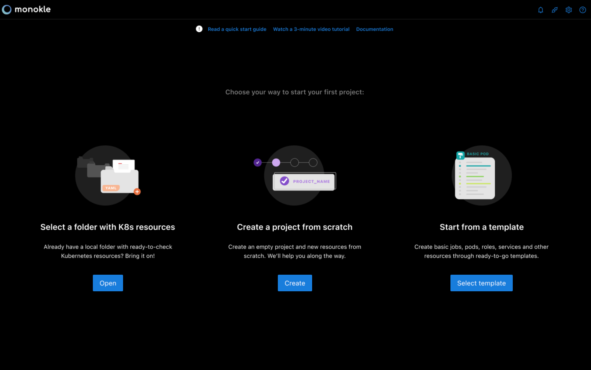
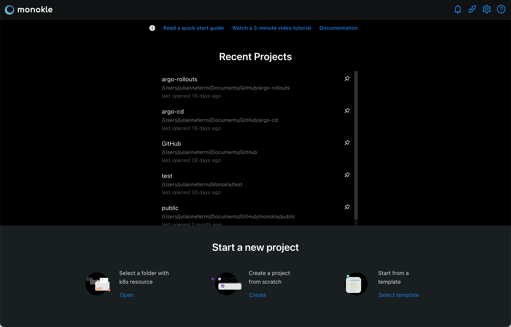
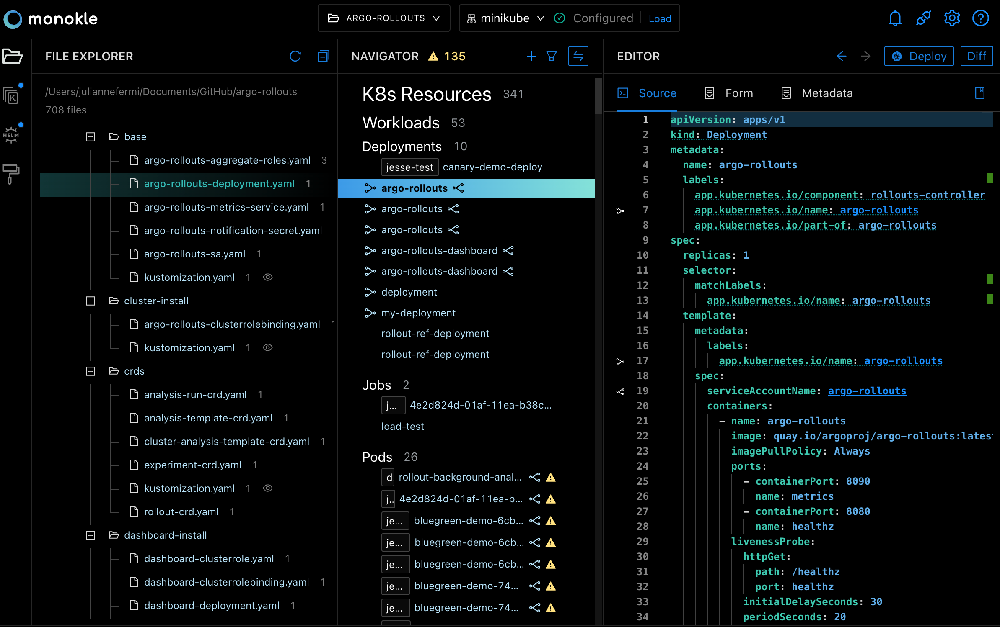
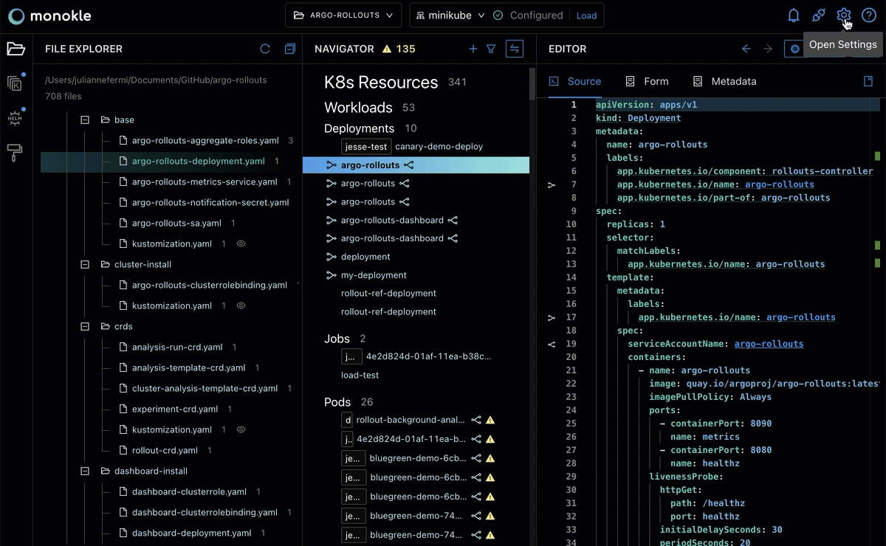
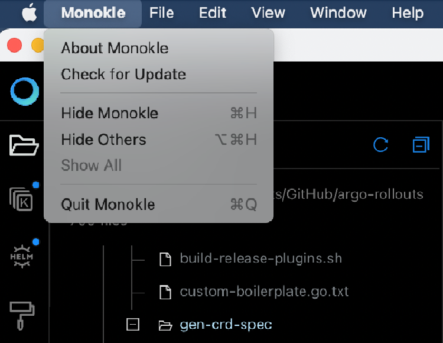
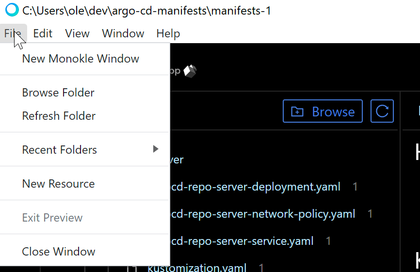
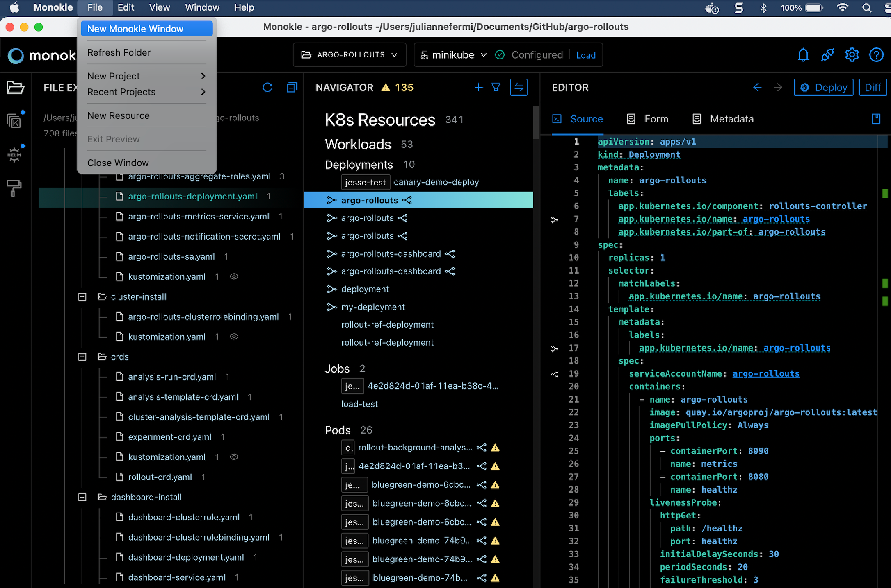
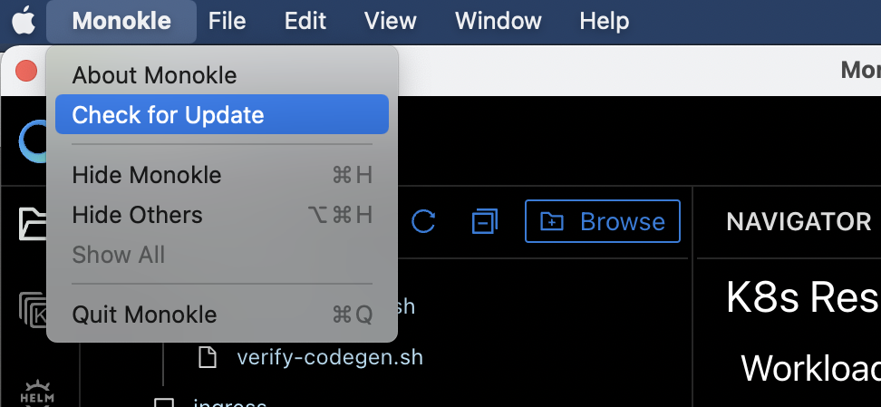

UI Overview
Launch Monokle
Note: Please follow this Getting Started guide to install Monokle 🚀
Launch Monokle and, on the welcome screen, there are three options to start working with projects:
- Select an exisiting folder.
- Create an empty project.
- Start from a template.

On subsequent start-ups, Monokle automatically loads the most recently selected folder, if the corresponding "Load recent folder on Startup" setting has been enabled:

Working with Projects
Click Select an existing folder to add your project folder containing K8 resources.
Monokle is laid out like many other desktop applications:

Left to right:
- The vertical toolbar to the far left allows you to switch between File, Kustomize, Helm and View Template mode.
- The File Explorer (shown in screenshot) shows the contents of the currently selected folder.
- The Navigator in the center shows all resources found in the current folder or cluster. By default it shows all possible Resource sections and subsections - when selecting a folder or cluster only those sections that actually contain any resources will be shown.
- The Editor section to the right contains editors/views/actions for the currently selected resource or file.
The top right contains the following buttons:
- Show Latest Notifications
- Open Plugins Manager
- Open Settings (see below)
- Help:
- Documentation -> opens the Monokle documentation in your system browser.
- GitHub -> opens the Monokle GitHub repo in your system browser.
- Discord -> Opens Discord to talk to us about your Monokle experience.
Settings
Clicking the Settings icon on the top right opens the settings:

Global Settings
- Projects Root Path
- On Startup:
- Automatically load last project.
- Show Cluster Selector.
- Telemetry:
- Disable Usage Data
- Disable Error Reports
Default Project Settings
- Kubeconfig: Sets which kubeconfig Monokle should use for all cluster interactions.
- Files: Include: Sets which files to parse for kubernetes resources when scanning folders.
- Files: Exclude: Sets which files/folders to exclude when scanning folders for resources.
- Helm Preview Mode: Sets which Helm command to use for generating previews (see Working with Helm Charts).
- Template: uses Helm Template
- Install: uses Helm Install
- Kustomize Command: Sets how to invoke kustomize when previewing and applying kustomization file.
- Use kubectl
- Use kustomize
- Maximum folder-read recursion depth: Configures how "deep" Monokle will parse a specified folder (to avoid going too deep).
- Resource links processing:
- Ignore optional unsatisfied links.
Active Project Settings
- Kubernetes Version: Sets Kubernetes' schema version for validation.
- Kubeconfig: Sets which kubeconfig Monokle should use for all cluster interactions.
- Files: Include: Sets which files to parse for kubernetes resources when scanning folders.
- Files: Exclude: Sets which files/folders to exclude when scanning folders for resources.
- Helm Preview Mode: Sets which Helm command to use for generating previews (see Working with Helm Charts).
- Template: uses Helm Template
- Install: uses Helm Install
- Kustomize Command: Sets how to invoke kustomize when previewing and applying kustomization file.
- Use kubectl
- Use kustomize
- Maximum folder-read recursion depth: Configures how "deep" Monokle will parse a specified folder (to avoid going too deep).
- Resource links processing:
- Ignore optional unsatisfied links.
System Menu
Monokle provides a system menu with the common File/Edit/View/Window/Help functionality.
Mac System Menu:

Windows System Menu:

Multiple Windows
You can launch multiple project windows using the New Monokle Windows option. This allows you to work on multiple folders or clusters simultaneously. Thus visual navigation for the recently used pages becomes simpler and faster.
Action: File > New Monokle Window

Keyboard Shortcuts
Please visit Monokle Keyboard Shortcuts for a complete list of keyboard shortcuts.
Auto-update
The Monokle (on Mac) / Help (on Windows) system menus provide a "Check for Update" action that will check for an update and prompt to download, if available.
